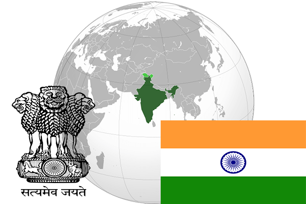

To`liq nomi: Hindiston Respublikasi
Region: Janubiy Osiyo
Qonunchilik shakli: Federativ Respublika
Mustaqillik kuni: 15-avgust 1947 - yil (Birlashgan qirollikdan)
Poytaxt: Nyu Dehli
Maydoni: 3 287 263 km² (dunyoda 7 -o`rinda )
Chegaradosh davlatlari: Pokiston, Afgoniston, Xitoy, Nepal, Myama, Butan, Bangladesh
Aholisi: 1 316 830 000 (dunyoda 2 - o`rinda, 2013 -yil roʻyxat)
Aholi zichligi: 364 /km²
Aholining o`rtacha yoshi: 68,75 yil (71,2 ayollar, 66,3 erkaklar)
Rasmiy tili: Hind, ingliz va yana 21 til
Dini: 83% induist, 11% musulmon qolgan qismi xristian, sikxi va boshqa
Pul birligi: Hind rupisi
Telefon prefiksi: +91
Internet domen: .in
Xalqaro tashkilotlarga a`zoligi: BMT (1945 – yildan), Tez rivojlanayotgan davlatlar (2001-yildan)
Dengiz va okeanlarga chiqishi: Araviy, Lekkadiv va Bengal qo`ltigi dengizlari
YIM: Butun: $ 7,277 trln, Jon boshiga $ 5 777 (2014 - yil roʻyxati)
Yirik shaharlari: Mumbay, Dehli,Bangalor, Chinnay, Kalkutta